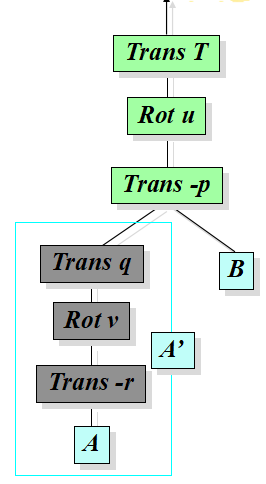

Stick Man
Requirement
Last class,we have learn many knowledge about transformation.Now you need to complete the project II this week,I guess teacher has introduced the detail about this project,please create your stick man and let it move like a real man,I believe you can complete it perfectly.You can get the instruction from "No.5 Transformation" P63-82

Experiment Procedure
First, write a funcion drawcube() by using OpenGL to draw some cubes to form the stick man with statement glTexCoord2f() and glVertex3f(). Call function drawcube() can draw a fixed size cube. However, stick man is consisted of 4 different size cubes, they are head, body, arm and leg. Luckily, a OpenGL function glScaled() help us that just call drawcube() can draw different size cubes. Till now, we draw a stick man successfully.
Next, let stick man move is a hard part in this experiment. The key problem is as soon as you want to change something, the stick man likely falls apart. The reason is the stick man doesn't know it is constrained. So we must make the sitck man be inseparable. Here I use transformation hierarchies. The picture below shows this way.
For example, the shoulder moves, everythins below shoulder like arms do same actions. This way can make stick man move natrually. Till now, we can let stick man march on the spot.
Finally, we want stick man walk a little distance. To realize this, we should add a transformation function at the outermost layer. Because of transformation hierarchies, the stick man will move from one point to another point as a whole. For some details, the rotate speed of arms and legs must be a suitable value, or the stick man will move very strangely.